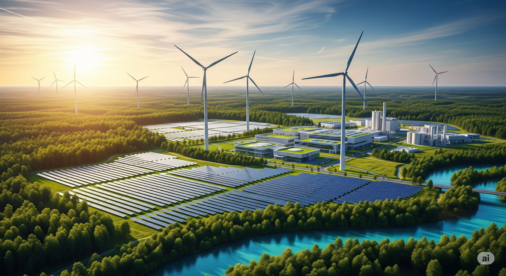
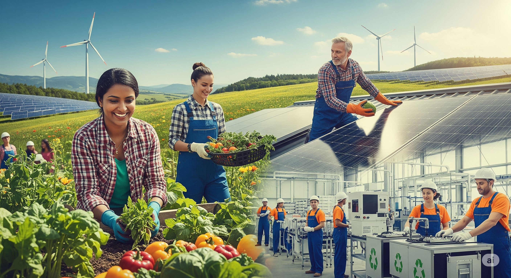

Sustentabilidade ganha força no país em 2025
A pauta da sustentabilidade nunca esteve tão em evidência no Brasil como em 2025. Empresas de diversos setores e o governo federal têm intensificado investimentos em projetos que visam não apenas reduzir o impacto ambiental, mas também promover um modelo de desenvolvimento mais verde e inclusivo.
Um dos destaques é o aumento significativo no uso de energias renováveis. A capacidade instalada de energia solar e eólica cresceu mais de 40% no último ano, impulsionada por incentivos fiscais e pela crescente conscientização sobre a importância da transição energética. Grandes corporações também estão adotando metas ambiciosas de neutralidade de carbono e investindo em tecnologias limpas.
Iniciativas Governamentais e Empresariais
O governo lançou o "Plano Nacional de Economia Circular", que incentiva a redução do desperdício, a reutilização de materiais e a reciclagem em larga escala. Além disso, programas de conservação de biomas como a Amazônia e o Cerrado foram fortalecidos, com maior fiscalização contra o desmatamento ilegal e incentivos para práticas agrícolas sustentáveis.
No setor privado, observa-se um movimento crescente de empresas buscando certificações ambientais e integrando critérios ESG (Ambiental, Social e de Governança) em suas estratégias de negócio. O mercado de crédito de carbono também está em expansão, oferecendo novas oportunidades para projetos de reflorestamento e conservação.
Conscientização e Desafios
A conscientização da população sobre a importância da sustentabilidade também tem aumentado, refletindo-se em mudanças nos hábitos de consumo e maior pressão por práticas responsáveis. No entanto, o Brasil ainda enfrenta desafios significativos, como a necessidade de universalizar o saneamento básico e combater a exploração ilegal de recursos naturais. A transição para uma economia verdadeiramente sustentável é um processo contínuo que exige o engajamento de todos os setores da sociedade.